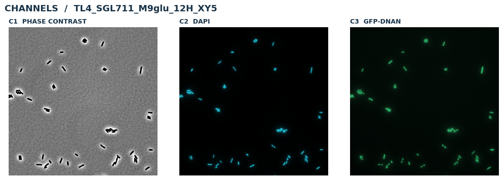
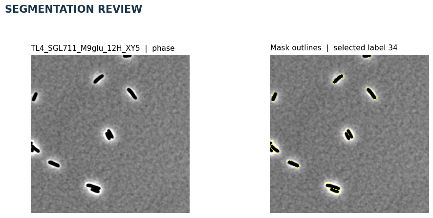
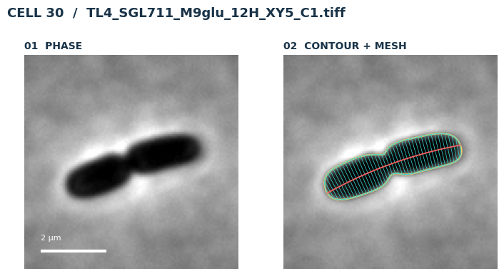
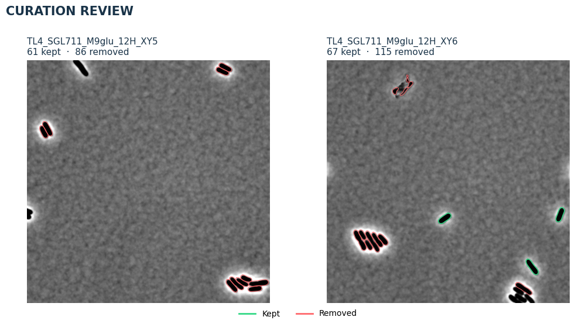
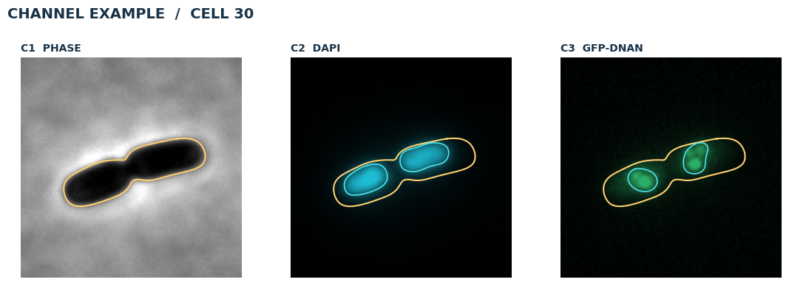
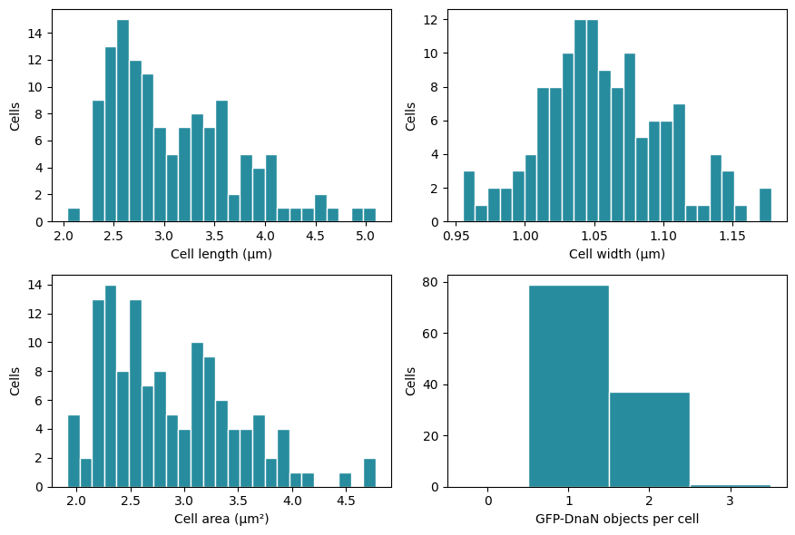

This walkthrough follows the original examples/3_channel_example_walkthrough.ipynb notebook. Download the notebook or Python script. The figures show saved results from this example dataset. Run the notebook to reproduce the analysis.
Three-channel walkthrough: DAPI and GFP-DnaN objects¶
Each field contains phase contrast (C1), DAPI (C2, DNA/nucleoid), and
GFP-DnaN (C3, replication-associated puncta). We inspect masks and meshes,
detect intracellular objects, and extract one feature-table row per cell.
Run the cells from top to bottom. Supplied masks are reused by default; fresh segmentation and SVM curation are optional. You can also filter the resulting feature table afterwards, without using an SVM.
The setup copies the dataset from SOURCE_DIR to a fresh RUN_DIR under
~/bactoscoop_runs/. All new masks, meshes, and tables are written to that
working copy. Change settings in the cell that uses them. See the
installation guide for installation.
from datetime import datetime
from pathlib import Path
import os, sys
import shutil
import matplotlib.pyplot as plt
import pandas as pd
from IPython.display import display
import bactoscoop
import bactoscoop.plot as bplt
%matplotlib inline
# Set SOURCE_DIR to your extracted 3_channel_example folder if it is elsewhere.
SOURCE_DIR = None
if SOURCE_DIR is None:
examples_dir = os.environ.get("BACTOSCOOP_EXAMPLES_DIR")
candidates = ([Path(examples_dir)] if examples_dir else
[folder for base in (Path.cwd(), *Path.cwd().parents)
for folder in (base / "examples", base)])
SOURCE_DIR = next((base / "3_channel_example" for base in candidates
if (base / "3_channel_example").is_dir()), None)
if SOURCE_DIR is None:
raise FileNotFoundError("Set SOURCE_DIR to the extracted 3_channel_example folder.")
SOURCE_DIR = Path(SOURCE_DIR).expanduser().resolve()
RUN_DIR = (Path.home() / "bactoscoop_runs" /
datetime.now().strftime("%Y%m%d_%H%M%S_%f") / "3_channel_example")
shutil.copytree(SOURCE_DIR, RUN_DIR)
PHASE_CHANNEL = "C1"
CHANNEL_LABELS = {'C1': 'Phase contrast', 'C2': 'DAPI', 'C3': 'GFP-DnaN'}
FIELD_IDS = bplt.list_field_ids(RUN_DIR, phase_channel=PHASE_CHANNEL)
print("Source dataset:", SOURCE_DIR)
print("Working copy and outputs:", RUN_DIR)
print("Fields:", FIELD_IDS)
1. Inspect the input channels¶
A field is identified by the shared filename before _C1, _C2, and so on.
Display contrast is adjusted per panel; measurements use the original image
values. Choose a field and crop size below.
OVERVIEW_FIELD = FIELD_IDS[0]
OVERVIEW_CROP_PX = 1500
fig = bplt.plot_field_channels(
RUN_DIR, OVERVIEW_FIELD, CHANNEL_LABELS, crop_size=OVERVIEW_CROP_PX,
)
display(fig)
plt.close(fig)

1. Inspect the input channels. Saved notebook output from 3_channel_example; display settings are illustrative.¶
2. Load masks or run segmentation¶
Set the pixel size to your microscope calibration in micrometres per pixel.
Leave RUN_SEGMENTATION=False to load the supplied masks. Set it to True
to run Omnipose on C1; segmentation uses a GPU when available, otherwise CPU.
mask_thresh adjusts mask boundaries and minsize removes small segments.
Other tools’ masks also work: use same-size 2D integer TIFFs with background
0 and consecutive cell labels 1 through N.
PIXEL_SIZE_UM = 0.065
RUN_SEGMENTATION = False
ic = bactoscoop.ImageCollection(str(RUN_DIR), px=PIXEL_SIZE_UM)
ic.load_phase_images(phase_channel=PHASE_CHANNEL)
if RUN_SEGMENTATION:
ok = ic.segment_images(
mask_thresh=1, minsize=100, n=range(len(ic.images)),
model_name="bact_phase_omni",
)
if not ok:
raise RuntimeError(ic.processing_summary())
ic.create_image_objects(phase_channel=PHASE_CHANNEL)
Review the masks¶
Rerun only the next cell to inspect another field, label, or crop. A 700-pixel crop shows several cells; around 150–250 pixels gives a closer view. Both panels show the same crop, with mask outlines added on the right.
SEGMENTATION_FIELD = FIELD_IDS[0]
SEGMENTATION_LABEL = None # Set an integer label to centre on that cell.
SEGMENTATION_CENTER = None # Optional (row, column) when label is None.
SEGMENTATION_CROP_PX = 700
review_image = next(image for image in ic.image_objects
if image.image_name.rsplit("_", 1)[0] == SEGMENTATION_FIELD)
fig = bplt.plot_segmentation_review(
[review_image], crop_size=SEGMENTATION_CROP_PX,
mask_label=SEGMENTATION_LABEL, center=SEGMENTATION_CENTER,
)
display(fig)
plt.close(fig)

Review the masks. Saved notebook output from 3_channel_example; display settings are illustrative.¶
3. Build and inspect meshes¶
Each mask becomes a contour, paired mesh sides, and a midline. Join cell
masks when their nearest poles are at most join_thresh pixels apart.
split_thresh controls splitting at constrictions; smoothing controls
contour smoothing; CD_width=True uses width to assess constriction.
The default builds and saves 3_channel_example_meshdata.pkl in RUN_DIR.
Set LOAD_SAVED_MESHES=True to load the file currently in RUN_DIR instead.
To resume an earlier analysis, set SOURCE_DIR to that run’s folder before setup.
Only reload meshes that match the current images and masks.
LOAD_SAVED_MESHES = False
if LOAD_SAVED_MESHES:
ic.batch_load_mesh("3_channel_example_meshdata.pkl", phase_channel=PHASE_CHANNEL)
else:
ic.batch_process_mesh(
phase_channel=PHASE_CHANNEL, join_thresh=4, split_thresh=0.5,
CD_width=False, smoothing=0.1, save_data=True,
)
print("Cells with meshes:", sum(len(image.cells) for image in ic.image_objects))
Inspect the cell coordinate system¶
Choose a field and cell ID directly below. Set the ID to None for an
automatically selected representative cell. The plot shows phase contrast,
the contour, mesh, and midline.
MESH_FIELD = FIELD_IDS[0]
MESH_CELL_ID = 30
MESH_WINDOW_PX = 100
mesh_image, mesh_cell_id = bplt.select_example_cell(
ic.image_objects, field_id=MESH_FIELD, cell_id=MESH_CELL_ID,
)
fig = bplt.plot_cell_gallery(
mesh_image, mesh_cell_id, channel=None, window_px=MESH_WINDOW_PX,
)
display(fig)
plt.close(fig)

Inspect the cell coordinate system. Saved notebook output from 3_channel_example; display settings are illustrative.¶
4. Optional: curate meshes with an SVM¶
RUN_CURATION=True applies the example’s DnaN_Timecourse.pkl model. Green contours
are retained and red contours are rejected. This changes the cell population
before feature extraction and saves 3_channel_example_curated_meshdata.pkl.
Set the switch to False to continue without an SVM or model file. You can
filter the feature table in step 8 instead. Cells rejected here will not
receive later measurements. Inspect predictions before applying the supplied
model to other data, and only load trusted pickle files. To switch curation off
after applying it, rerun from step 3 to restore the uncurated meshes first.
RUN_CURATION = True
MODEL_PATH = RUN_DIR / "DnaN_Timecourse.pkl"
if RUN_CURATION:
if not MODEL_PATH.is_file():
raise FileNotFoundError(MODEL_PATH)
before_contours = bplt.snapshot_cell_contours(ic.image_objects)
before_count = sum(len(image.cells) for image in ic.image_objects)
ic.curate_dataset(str(MODEL_PATH), control=False, save_curated_data=True)
after_count = sum(len(image.cells) for image in ic.image_objects)
print(f"SVM curation: {before_count:,} to {after_count:,} cells")
fig = bplt.plot_curation_review(before_contours, ic.image_objects)
display(fig)
plt.close(fig)
else:
print("SVM curation skipped; continuing with all reconstructed cells.")

4. Optional: curate meshes with an SVM. Saved notebook output from 3_channel_example; display settings are illustrative.¶
5. Detect and review objects¶
Detect DAPI regions in C2 and GFP-DnaN puncta in C3. Both channels stay in
their original coordinates (align=False). We use the C3 detections for
object features in step 6; C2 is also used for intensity profiles.
log_sigma controls image filtering, kernel_width affects candidate-object
dilation, and the overlap limits control which candidates are accepted.
The count below sums individual contours, rather than cell/channel rows.
detections = ic.batch_detect_objects(
channels=["C2", "C3"], reset_channels=True, align=False,
smoothing=0.1, log_sigma=3, kernel_width=3,
min_overlap_ratio=0.001, max_external_ratio=0.5,
)
object_counts = (detections.assign(object_count=detections["object_contours"].map(len))
.groupby("channel")["object_count"].sum())
print("Detected objects per channel:")
display(object_counts)
Inspect a detected cell¶
Select the field, cell, and crop below. If curation removed a chosen cell,
select a retained ID or set it to None. The outlines show detected signal
regions. Rerunning this plot does not repeat detection.
OBJECT_FIELD = FIELD_IDS[0]
OBJECT_CELL_ID = 30
OBJECT_WINDOW_PX = 100
object_image, object_cell_id = bplt.select_example_cell(
ic.image_objects, field_id=OBJECT_FIELD, cell_id=OBJECT_CELL_ID,
)
fig = bplt.plot_signal_gallery(
object_image, object_cell_id,
channel_labels={"C2": "DAPI", "C3": "GFP-DnaN"},
window_px=OBJECT_WINDOW_PX, show_objects=True,
)
display(fig)
plt.close(fig)

Inspect a detected cell. Saved notebook output from 3_channel_example; display settings are illustrative.¶
6. Extract features¶
channel_method_pairs assigns feature methods to channels. morphological
measures cell geometry, profiling measures channel intensity profiles, and
objects summarizes C3 puncta. max_mesh_size excludes cells with more than
that many mesh rows. The merged table has one row per cell, with channel
prefixes such as C3_ on signal features.
C3_NC_ratio is the summed area of detected C3 objects divided by cell area.
It is a within-cell area fraction, but detection still depends on signal
quality and the chosen detection parameters.
channel_method_pairs = [
([None], "morphological"),
(["C2", "C3"], "profiling"),
(["C3"], "objects"),
]
ic.batch_calculate_features(
channel_method_pairs, all_data=False, reset=True, max_mesh_size=1000,
)
features = ic.merge_dataframes(discard_morphological_nan=True)
print(f"{len(features):,} cells × {len(features.columns)} columns")
display(features[["image_name", "cell_id", "cell_length", "cell_width", "cell_area"]].head())
7. Inspect feature distributions¶
Start with cell length, width, projected area, and detected-object count. These histograms show the measurements and their spread in this dataset; they are not universal acceptance ranges. Missing values are omitted from each plot and should not be interpreted as zero objects.
from matplotlib.ticker import MaxNLocator
HISTOGRAM_BINS = 25
plot_features = [
("cell_length", "Cell length (µm)"),
("cell_width", "Cell width (µm)"),
("cell_area", "Cell area (µm²)"),
("C3_object_number", "GFP-DnaN objects per cell"),
]
fig, axes = plt.subplots(2, 2, figsize=(9, 6))
for ax, (column, label) in zip(axes.flat, plot_features):
values = features[column].dropna()
bins = ([i - 0.5 for i in range(int(values.max()) + 2)]
if column.endswith("object_number") and not values.empty else HISTOGRAM_BINS)
ax.hist(values, bins=bins, color="#278C9E", edgecolor="white")
ax.set(xlabel=label, ylabel="Cells")
if column.endswith("object_number"):
ax.xaxis.set_major_locator(MaxNLocator(integer=True))
ax.set_xlim(left=-0.5)
fig.tight_layout()
display(fig)
plt.close(fig)

7. Inspect feature distributions. Saved notebook output from 3_channel_example; display settings are illustrative.¶
8. Optional: filter the resulting table¶
You can select cells using their measured features, whether or not you ran
SVM curation. The length limits below are illustrative: inspect your images
and histograms before choosing limits for your data. The original features
table stays available; this step creates a separate filtered_features
table. Earlier exclusions cannot be recovered from this table.
APPLY_FEATURE_FILTER = False
MIN_CELL_LENGTH_UM = 1.0
MAX_CELL_LENGTH_UM = 10.0
if APPLY_FEATURE_FILTER:
keep = features["cell_length"].between(MIN_CELL_LENGTH_UM, MAX_CELL_LENGTH_UM)
filtered_features = features.loc[keep].copy()
else:
filtered_features = features.copy()
print(f"Feature-table selection: {len(features):,} to {len(filtered_features):,} cells")
9. Save features¶
Save the full merged table as 3_channel_example_features.parquet and
3_channel_example_features.pkl in RUN_DIR. When feature filtering is enabled,
save that selection separately as 3_channel_example_filtered_features.parquet.
ic.dataframe_to_parquet()
pickle_path = ic.dataframe_to_pkl()
if APPLY_FEATURE_FILTER:
filtered_features.to_parquet(
RUN_DIR / "3_channel_example_filtered_features.parquet", index=False,
)
saved = pd.read_parquet(RUN_DIR / "3_channel_example_features.parquet")
print("Saved full table:", len(saved), "rows")
print("Outputs:", RUN_DIR)